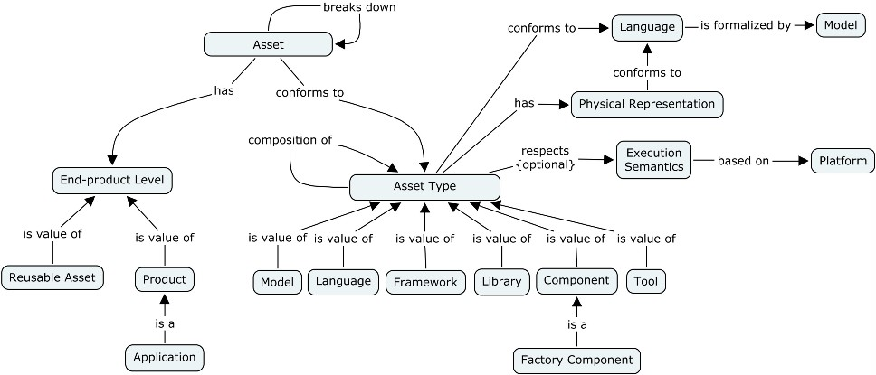

An asset is a valuable software artifact defined and playing a role in a software development process.
"Asset" is a generic term to designate a software artifact (e.g., a model, a document, code, a framework). This term has been chosen for two reasons: 1) a factory component is potentially able to manufacture any type of software artifact; 2) a software development process must add value. Because a factory component aims at automating software production, the purpose of a factory component is to automate production of assets from input assets.
A defined asset has a description, a purpose and properties (e.g., a structure, a set of functions), the whole defined by an asset type (e.g., a model, a language, a framework, a tool). All those properties and semantics are defined by a language, formalized or not by a model. For instance, Java code conforms to the Java language; this code is modeled (e.g., for reverse engineering) or not. The list of asset types is open, however the major ones are: model, (general or specific) language, framework, library, component and tool. For EGF, a special asset is the Factory Component type.
An asset type is a logical representation, what implies a physical representation (e.g., a web site asset is materialized by a set of html files). This representation is also defined by a language, formalized or not by a model. For executable assets, an asset respects execution semantics.
Complex assets are broken down into assets, possibly built at different stages of the software process. For instance, generation of tool code and configuration files of this tool are built by two different factory components sequentially or not.

Figure 1. Asset Structure
Software product line engineering differentiates two kinds of asset: reusable assets and products. Reusable assets are generally not usable as is but need to be customized to give products. In software engineering, a product is for instance a software application.